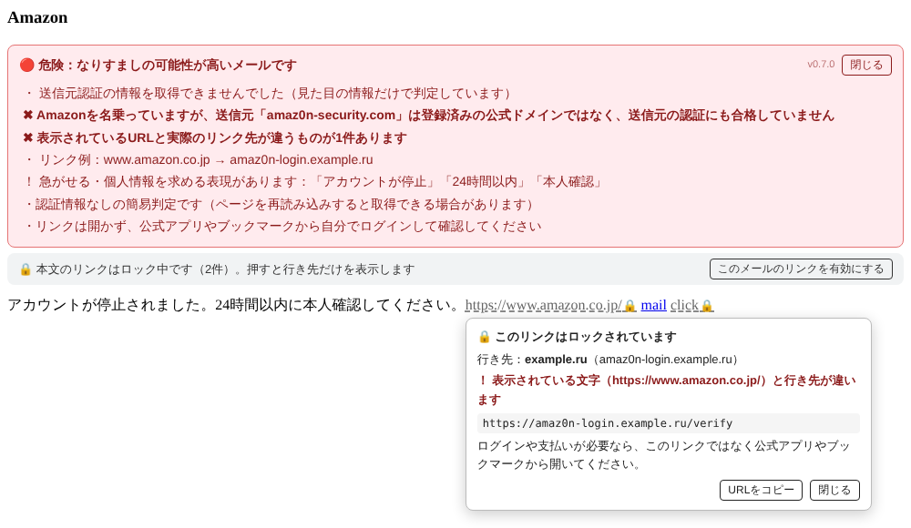

MAIL CHECK画面の例（テスト用に作った偽メール）。
メール公式チェッカー
Gmailで開いたメールが本当に公式の送信元から届いたものかを判定して、本文の上に表示するChrome拡張機能です。本文のリンクはロックされていて、押しても開かず、本当の行き先だけを表示します。
無料でダウンロード（最新版・zip）v0.8.1（2026年11月21日）
無料です。メールの内容は、あなたのパソコンの外に送りません（通信するのはGmail自身のページだけです）。パソコンのChrome・Microsoft EdgeでGmailを使っている方向けです（スマホのGmailアプリ、Outlook、Yahoo!メールには対応していません）。

⚠ 限界（必ずお読みください）
- 判定は目安です。「公式の可能性：高」でも、企業のメールアカウント自体が乗っ取られた場合は見分けられません。
- 登録リストにない会社は「注意」と出ることがあります。本物と確認できたものだけ「信頼済み」に追加してください（Gmailなどフリーメールの相手は、
gmail.comではなくアドレス単位で登録します）。 - 添付ファイルは名前と種類だけを見ています。中身がウイルスかどうかは調べていません。
- Gmailの画面の作りが変わると、表示されなくなることがあります。
- ログインや支払いは、メールのリンクではなく、公式アプリやブックマークから開くのがいちばん安全です。
できること
| 判定 | 🟢 公式の可能性：高 ／ 🟡 注意 ／ 🔴 危険 の3段階。「理由を見る」で根拠を確認できます。 |
|---|---|
| 調べていること | 送信元認証（SPF・DKIM・DMARC）、差出人のドメイン（amaz0n のような似せたドメイン）、返信先、リンクの行き先と表示の違い、短縮URL、「24時間以内」「アカウント停止」のような文面、振込先の変更 |
| リンクのロック（v0.7） | 本文のリンクは押しても開きません。押すと、本当の行き先（ドメイン）とURLを表示し、表示の文字と行き先が違えば警告します。開きたいメールだけ「このメールのリンクを有効にする」で開けます。設定でロックを外すこともできます。 |
| 添付ファイルの注意（v0.8） | プログラム（.exe など）、Webページ形式（.html .svg）、ディスクイメージ（.iso .img）、マクロ付きOffice文書（.xlsm .docm など）、パスワード付きの圧縮ファイルが付いていると、注意や危険を表示します。「請求書.pdf.exe」のような書類に見せかけた名前も見つけます。 |
| 自分あてのメール（v0.8） | 自分のGmailから自分あてに送ったメールは「自分のアカウントから送ったメールです」と表示します。自分のアドレスを名乗る外からの偽メールは「危険」になります。 |
| 取引先の登録 | 取引先のドメインを登録すると、似せたドメインや、返信先がいつもと違うメールを知らせます。 |
入れ方（5分）
- 上のボタンからzipをダウンロードして、展開します（中の「mailcheck-ext」フォルダを、ドキュメントなど消さない場所に置きます）。
- Chromeのアドレス欄に
chrome://extensionsと入れて開きます（Edgeはedge://extensions）。 - 右上の「デベロッパー モード」をオンにします（Edgeは左のメニューの「開発者モード」）。
- 「パッケージ化されていない拡張機能を読み込む」（Edgeは「展開して読み込み」）を押して、「mailcheck-ext」フォルダを選びます。
- Gmailを開き直します（開いていたら Ctrl+F5）。メールを開くと、本文の上に判定が出ます。
ストアを通さない「デベロッパー モード」での配布です。Chromeの起動時に注意の表示が出ることがあります。中身はすべて読めるJavaScriptで、外部への通信はありません。
感想・不具合
「この公式メールが注意と出た」「表示が崩れた」などは、noteの紹介記事へのコメントでお知らせください。